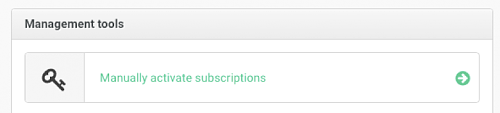
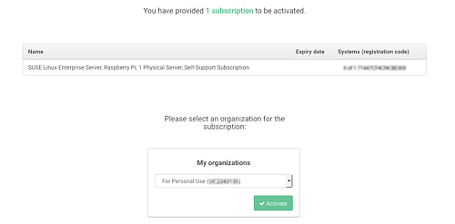

In this section it is explained how to perform the initial system configuration for SUSE Linux Enterprise Server for ARM 12 SP3 on the Raspberry Pi.
Follow these steps to change the default host name:
The default configuration has DHCP enabled on the Ethernet port. If that suits your network environment, you can skip this section. If you require the use of a static IP address, use YaST:
Open the YaST network module either by running yast2 lan or clicking the network icon in the YaST control center.
In YaST, you will see the network interface being selected. Select the built-in Ethernet and choose to open the address configuration.
Select and type in the desired values for and . Click .
With a static network configuration, you will also need to specify a DNS server (if applicable) and a gateway. For the gateway, select in the tab bar and enter the IPs of the gateways into the specific fields.
The DNS server is set in the tab. After choosing that tab, enter the IPs of the name servers into the respective fields.
Similarly to the procedure described above, YaST also lets you configure the built-in Wi-Fi network adapter.
For detailed information about the network configuration in SUSE Linux Enterprise Server, consult the respective sections of the SUSE Linux Enterprise Server Deployment Guide and the SUSE Linux Enterprise Server Administration Guide at https://documentation.suse.com/sles/12-SP3/. To access these guides, download the compressed documentation folder.
It is very important to register your SUSE Linux Enterprise Server for ARM subscription to ensure full functionality of your Raspberry Pi system. The SD card image provided by SUSE contains a minimal set of packages that are intended for the initial boot process and to get your Raspberry Pi onto the network.
When you have registered your SUSE Linux Enterprise Server for ARM subscription, you can download other packages you may need, such as compilers. The SUSE Linux Enterprise Server version that runs on your Raspberry Pi is the same version that runs on x86, Power, IBM Z, or on other Arm-based systems.
Setting the Clock
Because the Raspberry Pi does not have a persistent Real Time Clock, make sure that the clock is set to the current date and time before attempting to use Zypper or YaST to install additional packages.
You can register your system either during first boot or via the YaST Product Registration module.
Evaluation Code
Sixty day evaluation subscriptions may be requested at the following page: https://www.suse.com/products/arm/raspberry-pi/
After you obtained a registration code from a subscription card, you need to activate your subscription on the SUSE Customer Center at:
To register your subscription, perform the following steps:
Log in to the SUSE Customer Center using a browser on another machine. Create an account if required:

Click :
 Click the dialog field :
Enter the registration code and accept the terms and conditions:

Confirm the subscription activation and the organization assignment. Click :
 Your subscription is now active and ready to be used: